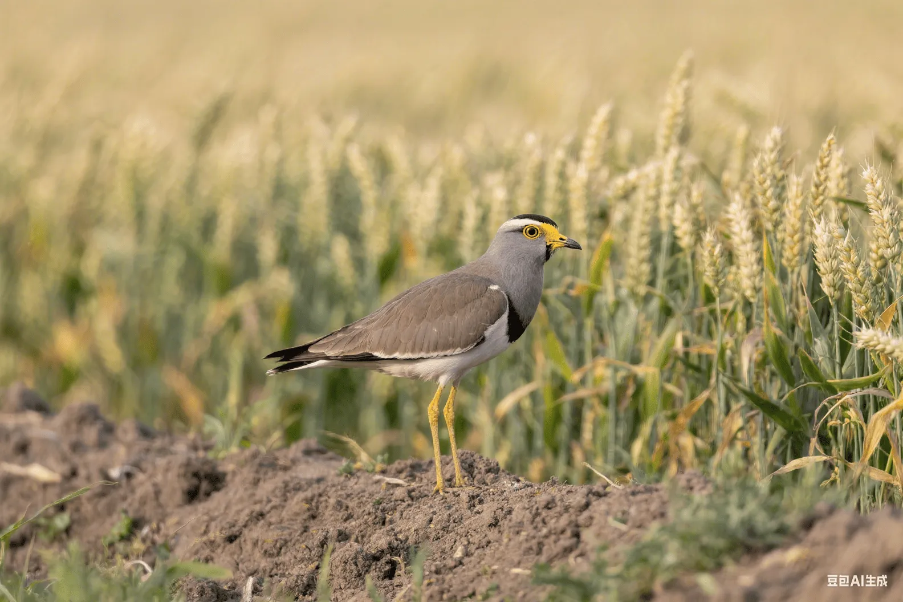

「気候変動は21世紀に鳥類が直面する最大の脅威の一つであり、世界の鳥類の分布と行動パターンを再形成している。」
— 気候変動生物学者🌡️ 地球温暖化の直接的な影響
地球の平均気温の上昇は、生理的適応から行動変化まで、鳥類に複数の直接的な影響を与えています。
🔥 気温上昇の影響
- 体温調節への圧力増加
- 水分要求量の増加
- 熱ストレス反応
- 繁殖成功率の低下
- 生息地の適合性の変化
🧬 生理的適応反応
- 代謝率の調整
- 羽毛の密度の変化
- 体サイズの変化
- 血液循環の調節
- ホルモンレベルの変化
📅 フェノロジーの変化
気候変動は鳥のライフサイクルイベントのタイミングをずらしており、この現象はフェノロジーの変化として知られています。
🐣 繁殖時期の変化
- 繁殖期の早期化
- 産卵時期の変化
- 抱卵期間の短縮または延長
- 複数回繁殖の増加
✈️ 渡りの時期の変化
- 春の渡りの早期化
- 秋の渡りの遅延
- 渡り距離の短縮
- 一部の種が渡りをやめる
⚠️ タイミングの不一致問題
- 繁殖期と食物のピークの不一致
- 渡りのタイミングと資源の利用可能性の不一致
- 捕食者-被食者関係の不均衡
- 植物の開花と受粉鳥の非同期
🗺️ 分布域の変化
気候変動は鳥類の地理的分布域を変化させており、多くの種が高緯度または高地へ移動することを余儀なくされています。
🧭 緯度分布の変化
- 極地への拡大
- 南限の縮小
- 分布中心の北方移動
- 新たな分布域の出現
⛰️ 標高分布の変化
- 高地への移動
- 山岳種が「逃げ場のない」状況に直面
- 垂直分布帯の上方移動
- 高山固有種の脅威
🌿 生息地の変化
- 樹木限界線の上昇
- 湿地の乾燥または拡大
- 草原から森林への移行
- 沿岸生息地の喪失
🌊 極端な気象イベント
気候変動は極端な気象イベントの頻度と強度を増加させ、鳥類に深刻な脅威をもたらしています。
🌪️ 嵐とハリケーン
- 直接的な死亡率の増加
- 生息地の破壊
- 渡りルートの妨害
- 繁殖の失敗
🏜️ 干ばつと洪水
- 水と食料の不足
- 生息地の質の低下
- 病気の伝播の増加
- 個体数の変動
🌡️ 極端な気温
- 熱波による大量死
- 寒波による食料獲得への影響
- 繁殖成功率の低下
- 雛の生存率の低下
🌊 海面上昇の影響
海面上昇は沿岸および島の鳥類に特に深刻な脅威をもたらします。
🏖️ 沿岸生息地の喪失
- 干潟や塩性湿地の水没
- 繁殖地の消失
- 採餌エリアの減少
- 生息地の断片化の激化
🏝️ 島嶼生態系
- 小島の完全な水没
- 淡水資源の塩化
- 植生の枯死
- 固有種の絶滅リスク
🍎 食物網の変化
気候変動は生態系の食物網構造を変化させ、鳥類の食料源に影響を与えます。
🐛 獲物の変化
- 昆虫のライフサイクルの変化
- 魚の分布の変化
- 植物の開花・結実時期の変化
- 食物の質の低下
🤝 競争関係の変化
- 新たな競争相手の出現
- 資源競争の激化
- ニッチの重複の増加
- 優占個体群の変化
🦠 病気の伝播
気候変動は病気の伝播パターンと強度に影響を与えます。
🦠 病原体の変化
- 病原体の分布域の拡大
- 伝播ベクターの増加
- 病気の発生頻度の増加
- 新たな病気の出現
🛡️ 免疫系への影響
- ストレスによる免疫力の低下
- 栄養失調による抵抗力への影響
- 個体群密度の変化による伝播への影響
- 気候ストレスによる感受性の増加
🔬 適応と進化
気候変動に直面して、鳥類はさまざまな適応戦略を示します。
🎭 行動的適応
- 活動時間の変更
- 採餌戦略の調整
- 渡りルートの変更
- 繁殖行動の修正
🧬 進化的適応
- 遺伝子頻度の変化
- 形態的特徴の変化
- 生理機能の調整
- 生活史戦略の変化
⚠️ 適応の限界
- 適応速度が変化の速さに追いつかない
- 遺伝的多様性の不足
- 生理的限界
- 生息地の制約
🛡️ 保護戦略
気候変動に対処するには、包括的な保護戦略が必要です。
🌱 緩和戦略
- 温室効果ガス排出量の削減
- 炭素吸収源となる生息地の保護
- 再生可能エネルギーの推進
- エネルギー効率の向上
🔄 適応戦略
- 気候避難所の設立
- 生態回廊の創設
- 補助的移住
- 生息地の回復
📊 モニタリング戦略
- 長期的な個体群モニタリング
- 気候影響評価
- 早期警戒システム
- 適応的管理
🔮 将来展望
鳥類に対する気候変動の影響は今後も強まるため、以下が必要です：
- 国際協力の強化
- より多くの保護資源
- 新たな保護技術の開発
- 国民の環境意識の向上
- 長期的な保護計画